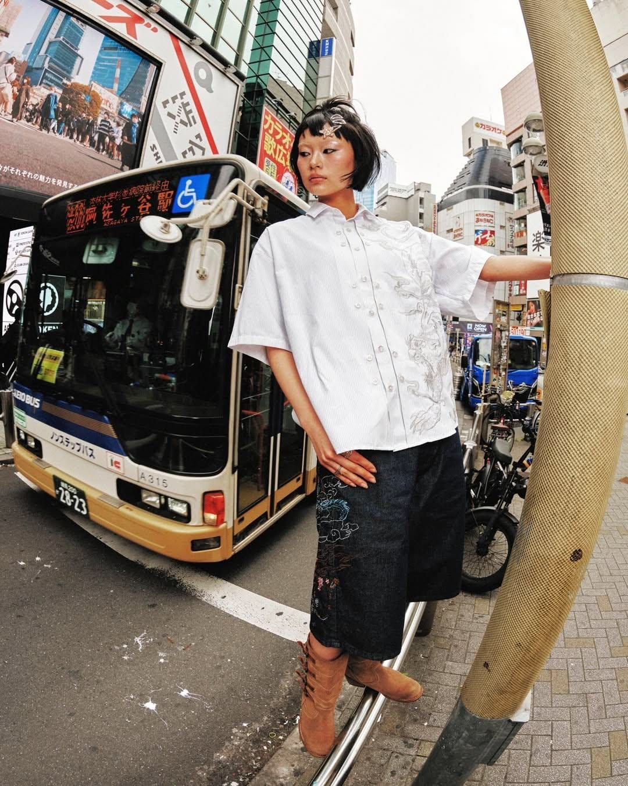
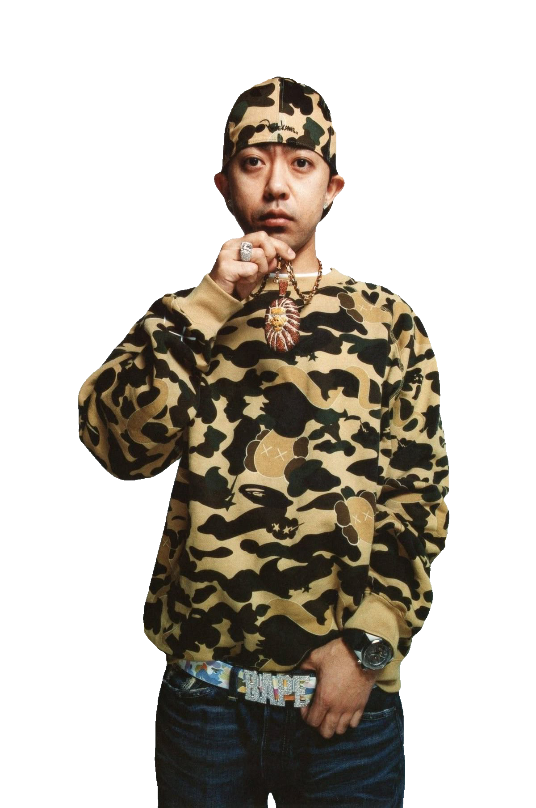
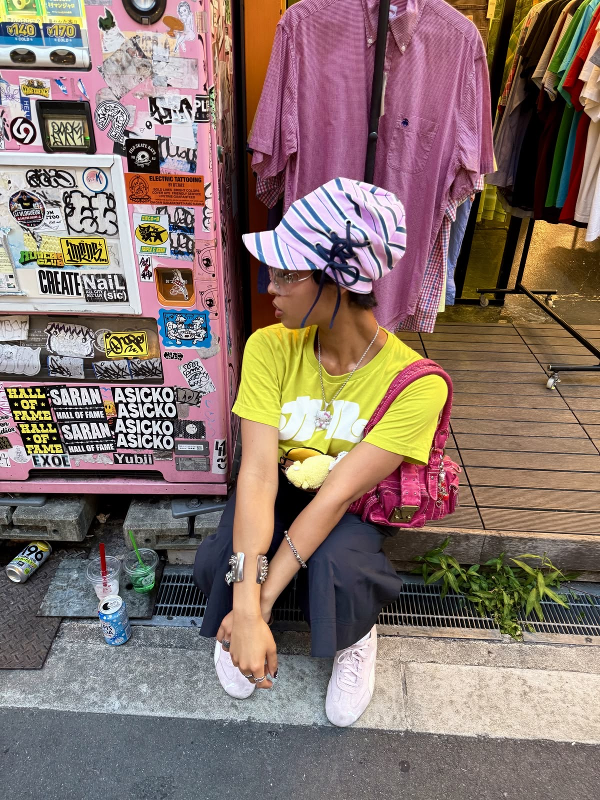
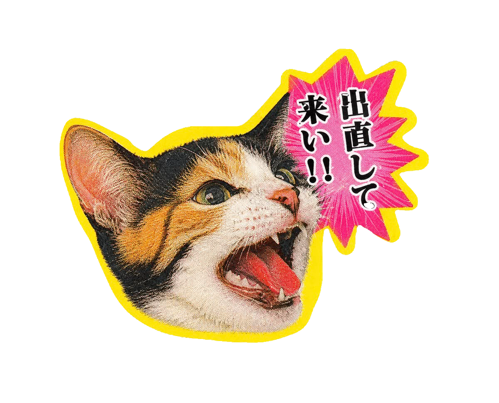

Music. Streetwear. Internet. Identity.
It's more than fashion. Ik vind het bijzonder hoe je via kleding mensen kunt vinden met dezelfde interesses. Je hoeft elkaar niet eens te kennen om een connectie te voelen.
TOKYO STREET FILES — VOL. 01

It's more than fashion. Ik vind het bijzonder hoe je via kleding mensen kunt vinden met dezelfde interesses. Je hoeft elkaar niet eens te kennen om een connectie te voelen.
In 1993 richtte Nigo het streetwearmerk A Bathing Ape, beter bekend als BAPE, op in Tokio. Met opvallende camouflageprints, herkenbare logo's en exclusieve releases groeide het merk uit tot een belangrijke pionier van de streetwear- en hiphopcultuur.

Stel je voor: je ziet een artiest en hun outfit in je feed. Je herkent de stijl, gaat op zoek en ontdekt nieuwe merken. Via het internet kun je een wereld ontdekken die eerst ver weg leek.

Ik vind het bijzonder hoe muziek en fashion culturen met elkaar kunnen verbinden. Een artiest, een merk of een bepaalde stijl kan het begin zijn van een community. Het internet maakt die verbinding zichtbaar en toegankelijk.
